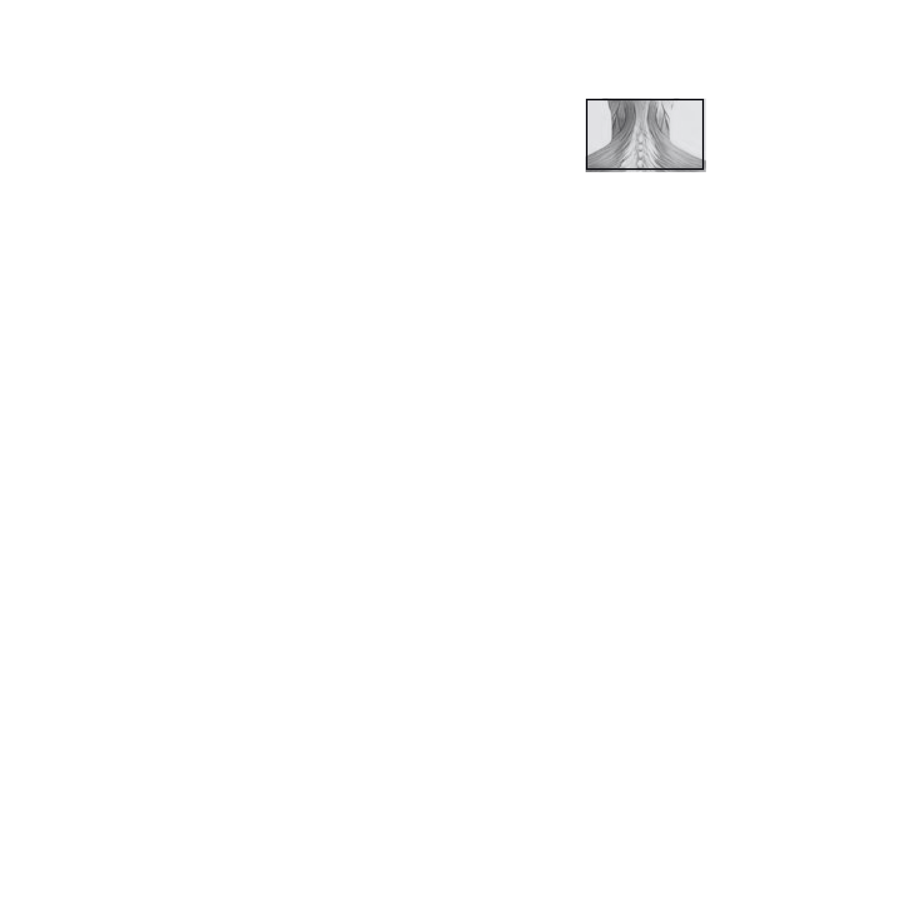
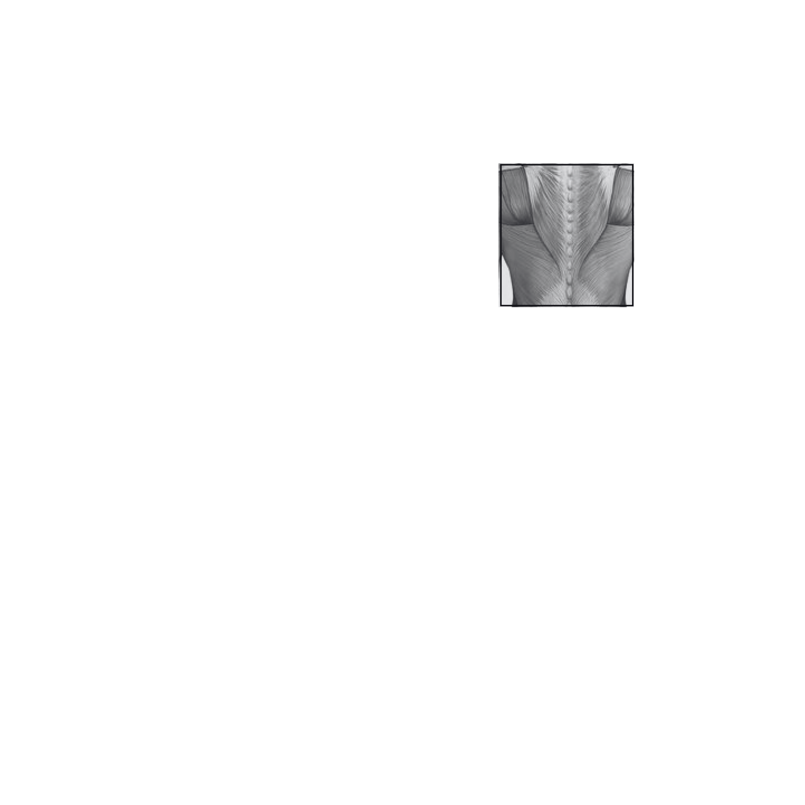
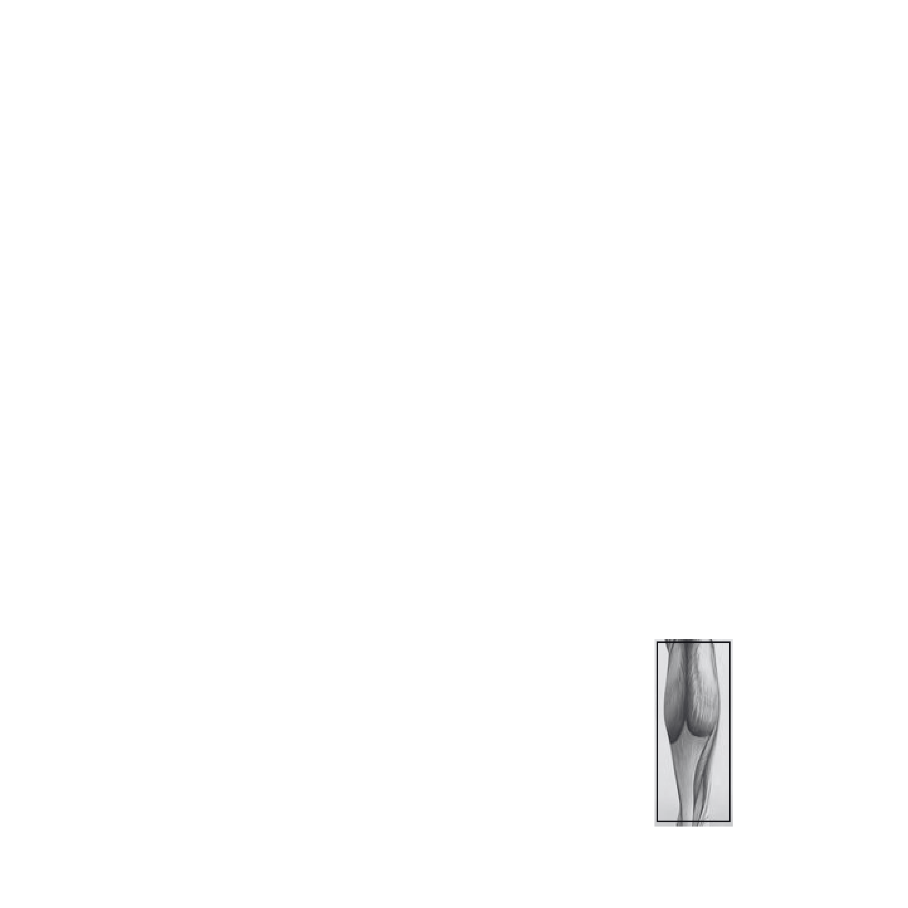
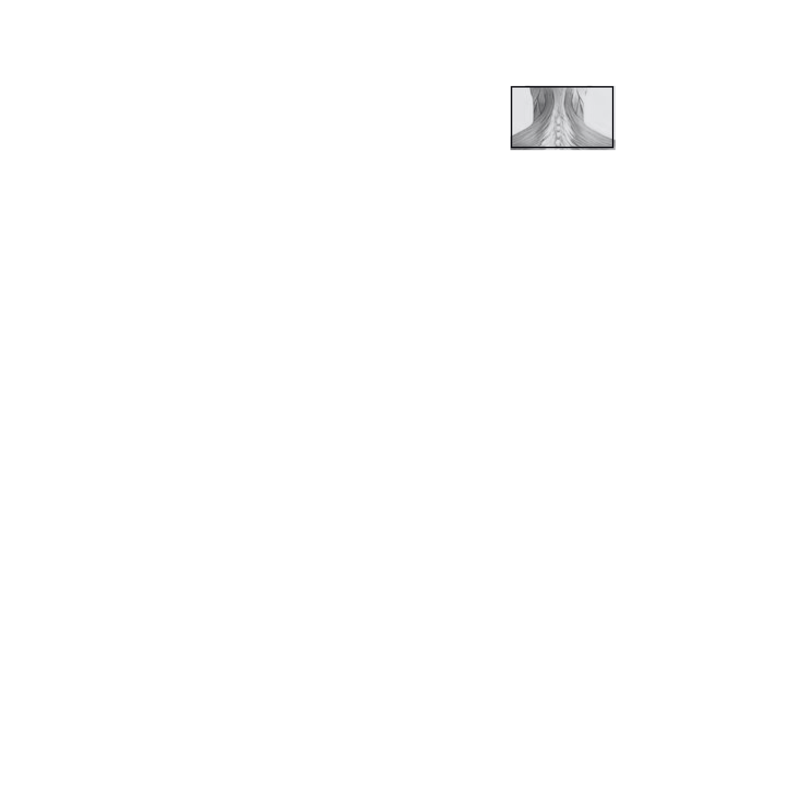
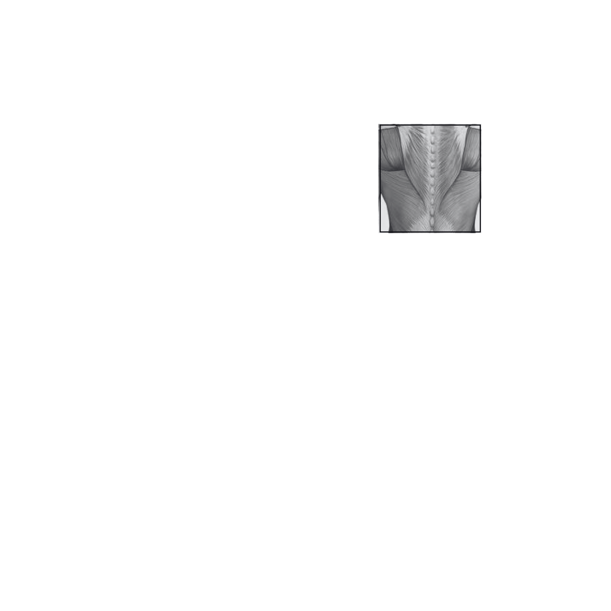
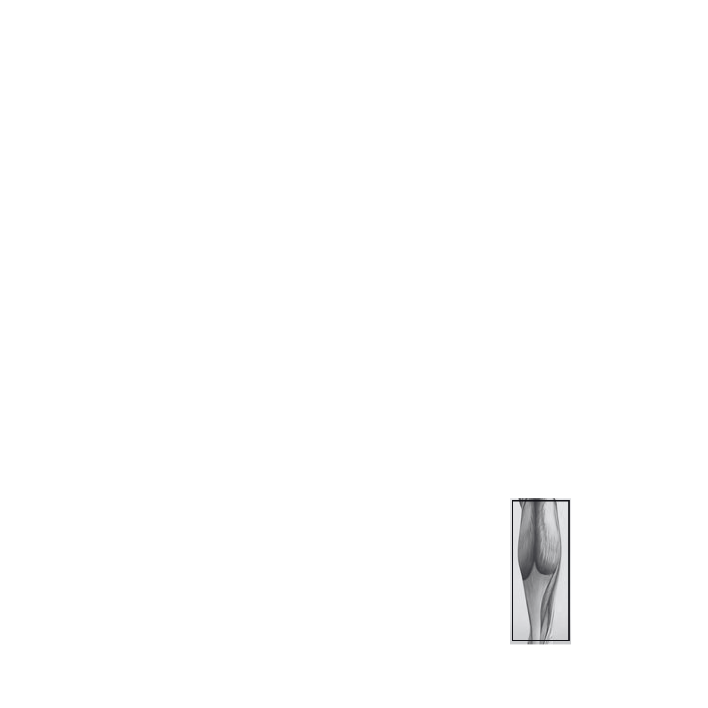

🏥 Definisi
Cedera olahraga adalah kerusakan pada sistem muskuloskeletal atau organ tubuh yang terjadi akibat kegiatan olahraga, baik secara langsung maupun tidak langsung, sehingga menimbulkan gangguan pada fungsi sistem tersebut.
🎯 Sistem yang Terdampak
- Sistem Muskuloskeletal: Otot, tulang, sendi, ligamen, tendon
- Organ Tubuh: Kepala, organ dalam, sistem saraf
- Dampak: Gangguan fungsi dan performa aktivitas
Ada tiga klasifikasi cedera olahraga, yaitu berdasarkan waktu terjadi, penyebab, dan jenis cederanya.
Berdasarkan Waktu
Overuse Injury
Ciri: Berkembang bertahap
Penyebab: Gerakan berulang berkepanjangan
Traumatic Injury
Ciri: Terjadi mendadak
Penyebab: Trauma/benturan langsung
Berdasarkan Penyebab
Berdasarkan Jenis
🚨 Tingkat Keparahan
 





Hover Button untuk Melihat Area Cedera
Arahkan mouse ke button cedera untuk melihat visualisasi pada gambar tubuh dan informasi detail.
Pilih jenis olahraga untuk melihat cedera yang umum terjadi:
Pilih Olahraga
🩺 Evaluasi Cedera Anda
Jawab pertanyaan berikut untuk mengetahui tingkat keparahan cedera Anda:
Hasil Evaluasi
Deskripsi tingkat cedera